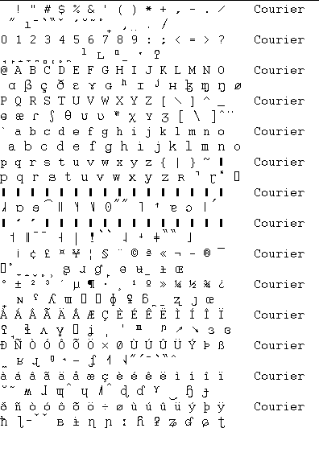

Opmerking: Dit bestand kan met een kale ASCII tekstverwerker (b.v. notepad) worden gewijzigd.
| Overzicht
Spraak
Analyse Ontwerpen Syntax Wiskundige Interpretatie |
SpraakAnalyse |
|
| Kenmerk-waarden , Phonetic Font |
Kenmerken
bestand LIPP_ASCII.INI 
Opmerking: Dit bestand kan met een kale
ASCII tekstverwerker (b.v. notepad) worden gewijzigd.
[ArrayWaarden]
[kenmerk A B C D E F
G G I J K L M N O
P]
32= 00,00,00,00,00,00,00,00,00,00,00,00,00,00,00,00
toets spatie, weergave spatie
' 39= 00,00,00,00,00,00,00,00,00,00,02,00,00,00,00,00
. 46= 00,00,00,15,00,00,00,00,00,00,00,00,00,00,00,00
? 63= 11,01,00,02,00,00,00,00,00,00,00,00,00,00,00,00
toets /
A 65= 18,16,00,01,00,00,00,00,00,00,00,00,00,00,00,00
E 69= 14,15,00,01,00,00,00,00,00,00,00,00,00,00,00,00
F 70= 09,03,00,01,00,00,00,00,00,00,00,00,00,00,00,00
zowel toets F als G
I 73= 15,13,00,01,00,00,00,00,00,00,00,00,00,00,00,00
N 78= 09,07,00,01,00,00,00,00,00,00,00,00,00,00,00,00
O 79= 15,14,01,01,00,00,00,00,00,00,00,00,00,00,00,00
toets ^O , weergave nul-met-slash
R 82= 09,05,00,01,00,00,00,00,00,00,00,00,00,00,00,00
S 83= 08,03,01,02,00,00,00,00,00,00,00,00,00,00,00,00
U 85= 16,12,01,01,00,00,00,00,00,00,00,00,00,00,00,00
V 86= 02,08,00,01,00,00,00,00,00,00,00,00,00,00,00,00
zowel toets V als W
Z 90= 08,03,01,01,00,00,00,00,00,00,00,00,00,00,00,00
a 97= 16,16,00,01,00,00,00,00,00,00,00,00,00,00,00,00
b 98= 01,01,00,01,00,00,00,00,00,00,00,00,00,00,00,00
d 100=07,01,00,01,00,00,00,00,00,00,00,00,00,00,00,00
e 101=14,14,00,01,00,00,00,00,00,00,00,00,00,00,00,00
f 102=02,03,00,02,00,00,00,00,00,00,00,00,00,00,00,00
g 103=09,01,00,01,00,00,00,00,00,00,00,00,00,00,00,00
h 104=11,03,00,02,00,00,00,00,00,00,00,00,00,00,00,00
i 105=14,12,00,01,00,00,00,00,00,00,00,00,00,00,00,00
j 106=08,08,00,01,00,00,00,00,00,00,00,00,00,00,00,00
k 107=09,01,00,02,00,00,00,00,00,00,00,00,00,00,00,00
l 108=07,08,02,01,00,00,00,00,00,00,00,00,00,00,00,00
m 109=01,07,00,01,00,00,00,00,00,00,00,00,00,00,00,00
n 110=07,07,00,01,00,00,00,00,00,00,00,00,00,00,00,00
o 111=18,14,01,01,00,00,00,00,00,00,00,00,00,00,00,00
p 112=01,01,00,02,00,00,00,00,00,00,00,00,00,00,00,00
r 114=07,05,00,01,00,00,00,00,00,00,00,00,00,00,00,00
s 115=07,03,06,02,00,00,00,00,00,00,00,00,00,00,00,00
t 116=07,01,00,02,00,00,00,00,00,00,00,00,00,00,00,00
u 117=18,12,01,01,00,00,00,00,00,00,00,00,00,00,00,00
v 118=02,03,00,01,00,00,00,00,00,00,00,00,00,00,00,00
w 119=01,08,00,01,00,00,00,00,00,00,00,00,00,00,00,00
x 120=09,03,00,02,00,00,00,00,00,00,00,00,00,00,00,00
y 121=14,12,01,01,00,00,00,00,00,00,00,00,00,00,00,00
z 122=07,03,06,01,00,00,00,00,00,00,00,00,00,00,00,00
{ 123=09,05,00,01,00,00,00,00,00,00,00,00,00,00,00,00
toets R, weergave R
141=18,15,01,01,00,00,00,00,00,00,00,00,00,00,00,00
toets O, weergave omgekeerde c
171=16,14,00,01,00,00,00,00,00,00,00,00,00,00,00,00
toets @, weergave omgekeerde e
172=16,12,01,01,00,00,00,00,00,00,00,00,00,00,00,00
toets U, weergave u-met-streepje
195=18,15,00,01,00,00,00,00,00,00,00,00,00,00,00,00
eerste helft van ^y
214=00,00,00,14,00,00,00,00,00,00,00,00,00,00,00,00
toets $ of -, weergave -
Code
vertaling Keyboard 
case key of
#15 :Key := #79;
// <ctrl>-o wordt nul-met-streep-erdoor
#36 :Key := #214; //
$ wordt - streepje
#45 :Key := #214; //
O met trema wordt minteken
#47 :Key := #63;
// / wordt vraagteken-aan-de-grond
#64 :Key := #171; //
@ wordt omgekeerde e
#71 :Key := #70;
// G wordt F (G is namelijk logischer in Nederlands)
#79 :Key := #141; //
hoofdletter-O wordt omgekeerde c
#82 :Key := #123; //
R wordt R (klopt niet in het font)
#85 :Key := #172; //
U wordt kleine u-met-horizontale-streep
#87 :Key := #86;
// W wordt V (W is namelijk logischer in Nederlands)
{#95 is underscore,
wordt bij printen #61}
end;
| Hiernaast ter vergelijking het font Courier
en Doulouse IPA93 (mansucript). Van het font Courier is de ASCII-waarde
bekend.
LET OP: in het IPA-font zitten veel combinatie tekens, daarom klopt de uitlijning ook niet altijd, terwijl de font grootte van beide lettertypen gelijk is. |
 |